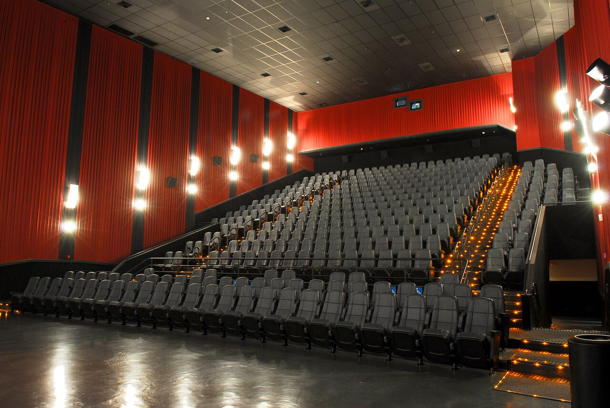

Vamos conhecer mais sobre essa cidade maravilhosa

Como tudo surgiu?
A origem de São Caetano do Sul remonta ao século XVI, com a fundação da vila de Santo André da
Borda do Campo, em 1553.
A vila foi fundada por João Ramalho, um português que se casou com uma índia da tribo Tupinambá.
No século XVIII, a região começou a ser ocupada por imigrantes europeus, principalmente
italianos. Os imigrantes
italianos se estabeleceram na região para trabalhar nas fazendas de café e de algodão.
Em 1877, a região foi desmembrada da vila de Santo André e passou a ser chamada de Distrito de
São Caetano.
O crescimento de São Caetano do Sul foi impulsionado pela industrialização da região, que
começou no início do século XX.
A cidade se tornou um importante polo industrial do Brasil, abrigando fábricas de
eletrodomésticos, de alimentos e de outros produtos.
Atualmente, São Caetano do Sul é uma cidade moderna e desenvolvida, com uma população de cerca
de 150 mil habitantes.
A cidade é um importante centro econômico, cultural e social da região do ABC Paulista.
Aqui estão alguns marcos importantes na história de São Caetano do Sul:
São Caetano do Sul é uma cidade com uma história rica e diversificada. A cidade é um importante centro econômico, cultural e social da região do ABC Paulista.
Como São Caetano está em 2023?
São Caetano do Sul é uma cidade moderna e desenvolvida, com uma população de cerca de 150 mil
habitantes.
A cidade é um importante centro econômico, cultural e social da região do ABC Paulista.
A cidade tem uma economia diversificada, com destaque para os setores industrial, comercial e de
serviços.
O setor industrial é o principal empregador da cidade, com destaque para as indústrias
eletrodomésticas, de alimentos e de outros produtos.
A cidade também é um importante centro cultural, com diversos museus, teatros e bibliotecas. São
Caetano do Sul
também é sede da Fundação Maria Luiza e Oscar Americano, uma importante instituição cultural da
região.
A cidade tem uma infraestrutura urbana bem desenvolvida, com um sistema de transporte público
eficiente
e uma rede de escolas e hospitais públicos de qualidade.
Nos últimos anos, São Caetano do Sul tem investido em áreas como educação, cultura e mobilidade
urbana.
A cidade tem se esforçado para melhorar a qualidade de vida de seus habitantes e se tornar uma
cidade mais sustentável.
Aqui estão alguns dos principais destaques da cidade de São Caetano do Sul em 2023:
São Caetano do Sul é uma cidade em constante crescimento e desenvolvimento. A cidade oferece uma
ampla gama de oportunidades para seus habitantes e é um importante centro econômico, cultural e
social da região do ABC Paulista.
Alguns dos principais desafios que a cidade enfrenta em 2023 são:
A cidade está trabalhando para enfrentar esses desafios e melhorar a qualidade de vida de seus habitantes.
Pontos Turisticos de São Caetano do Sul
Parkshopping São Caetano

O ParkShopping São Caetano é um shopping center localizado na cidade de São Caetano do Sul,
no estado de São Paulo. Ele foi inaugurado em 2011 e é um dos principais centros comerciais
da região do ABC Paulista. O shopping possui uma área de 80 mil metros quadrados e abriga
mais de 240 lojas, incluindo lojas de roupas, calçados, acessórios, eletrônicos, serviços
e entretenimento. O shopping também possui um cinema com 12 salas de exibição, um supermercado
e uma praça de alimentação. O ParkShopping São Caetano é um local popular para compras, lazer
e entretenimento. Ele é um destino para pessoas de todas as idades e de todas as classes
sociais.
Cinemark Park Shopping

O Cinemark Park Shopping São Caetano é um complexo de cinemas localizado no shopping center de
mesmo nome, na cidade de São Caetano do Sul, no estado de São Paulo. Ele foi inaugurado em 2011
e é um dos principais cinemas da região do ABC Paulista. O complexo possui 12 salas de exibição,
com capacidade total de 2.300 espectadores. As salas são equipadas com tecnologia de última
geração, incluindo projeção digital, som Dolby Atmos e poltronas reclináveis. O Cinemark Park
Shopping São Caetano oferece uma variedade de opções para assistir a filmes, incluindo filmes de
estreia, filmes independentes e filmes clássicos. O complexo também oferece diversas promoções e
descontos, como meia-entrada para estudantes, idosos e professores.
Espaco Verde Chico Mendes

O Espaço Verde Chico Mendes é um parque público localizado na cidade de São Caetano do Sul, no
estado de São Paulo. Ele foi inaugurado em 2007 e é um dos principais locais de lazer e prática
de esportes deste município da região do Grande ABC. O parque possui uma área de 140.000 m² e
abriga diversos equipamentos de lazer, como playground, pista de caminhada, pista de cooper,
quadras poliesportivas, campo de futebol, quiosques e lanchonete. O parque também abriga um
lago,
onde é possível praticar pesca e passeios de pedalinho. O Espaço Verde Chico Mendes é um espaço
importante para a população de São Caetano do Sul. Ele é um local de lazer e recreação para
pessoas de todas as idades.